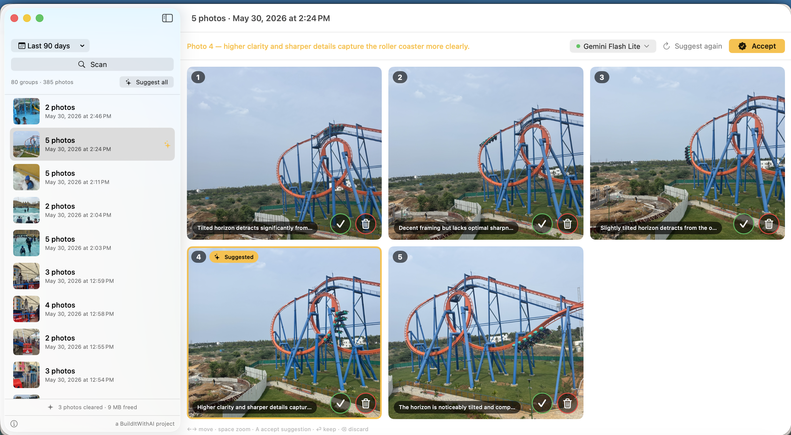

Whittle finds bursts of near-identical photos in Apple Photos and asks a vision model which one is worth keeping — then you decide.

Photos taken within 10 seconds of each other are grouped, and Apple’s Vision framework checks they actually look alike. Everything runs on your Mac.
A vision model looks at small copies of the group and says which photo is sharpest, has eyes open, no blur — with a concrete reason for each.
Keep or discard per photo, or accept the suggestion. You are always the tiebreaker — the model only advises.
Deletion needs your click plus macOS’s own confirmation, and photos go to Recently Deleted for 30 days. Nothing is ever gone instantly.
Recommended. Load any vision model like Qwen3-VL-4B; Whittle finds it automatically. Fast and fully offline.
Also detected automatically on its default port. Same privacy as LM Studio.
Gemini Flash via a key you add in Settings. The zero-install path; sends only the small copies described above.
Coming when macOS ships image input.